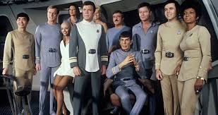

Star Trek: The Motion Picture
Star Trek: The Motion Picture (en España, Star Trek: la película) es una película estadounidense de ciencia ficción que forma parte del universo de Star Trek, creado por Gene Roddenberry. Fue la primera película de la franquicia basada en la serie de los 60 (Star Trek: La Serie Original), y se estrenó el 7 de diciembre de 1979. Su director fue el ganador del Óscar de la Academia Robert Wise; era su tercer film de ciencia ficción. Star Trek: The Motion Picture revitalizó la franquicia, que continuaría la historia con nueve secuelas y dos precuelas.
Equipo y reparto
Equipo
- Dirección: Robert Wise
- Producción: Gene Roddenberry
- Guión: Alan Dean Foster y Harold Livingston
- Música: Jerry Goldsmith
- Fotografía: Richard H. Kline
Reparto
| Actor | Personaje | Doblada en España |
|---|---|---|
| William Shatner | Almirante/Capitán James T. Kirk | Constantino Romero |
| Leonard Nimoy | Comandante Spock | Camilo García |
| DeForest Kelley | Comandante (Dr.) Leonard McCoy | Pepe Mediavilla |
| James Doohan | Comandante Montgomery Scott Luis | Posada Mendoza |
| George Takei | Tnte. Comandante Hikaru Sulu | Claudi García |